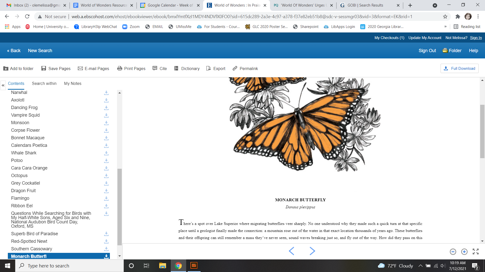
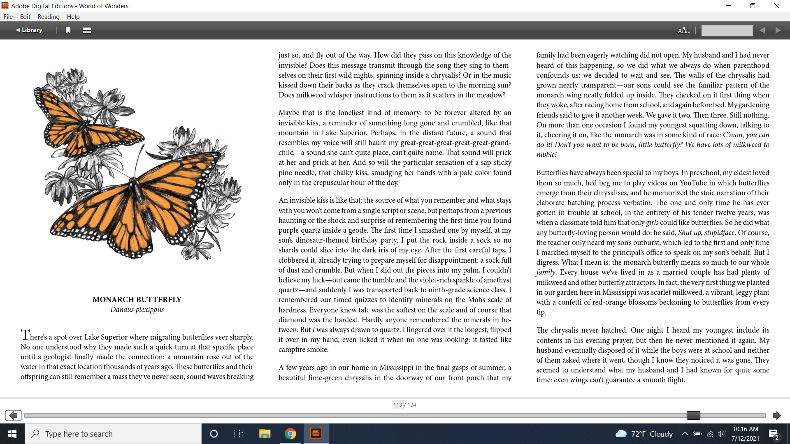

Common Reading Resource Guide¶
See Also
Using World of Wonders in the Classroom¶
The Common Reading Experience provides a shared intellectual experience for new members of the UM community. Through reading and considering a common book, new students engage with each other and with UM faculty in exploring issues relevant to today’s global community. The Common Reading Experience helps students understand the expectations of college-level academic work, the nature of scholarly inquiry, and the values of an academic community. The program also enriches new students’ campus experiences through co-curricular programs and events related to the book. The Common Reading Text is used in EDHE classes, Writing 100/101 classes, and other classes on campus. Visit the Common Reading Experience website for more information.
Why does UM have a Common Reading Experience?
By reading, writing, and learning together through the shared experience of the UM Common Reading Experience, students:
Develop critical thinking, reading, writing, and research skills and abilities
Gain an emerging sense of confidence as learners, thinkers, readers, and writers
Develop a sense of community among peers, neighbors, and instructors
Develop connections among ideas, experiences, disciplines, and academic and personal goals
Relate the issues raised by the common book to their lives as new or returning students.
Why was World of Wonders selected?¶
World of Wonders is a collection of beautifully written and illustrated essays that invite the reader to participate in, marvel at, and reflect on the natural world. Through its careful consideration of a variety of plants, animals, and places, the book reminds us that we are surrounded by and part of an incredible ecosystem that deserves our attention, awe, and care. The book has been named the Barnes and Noble Book of the Year 2020 and a NPR Best Book of 2020. It was a finalist for the Kirkus Prize for Nonfiction.
Who is Aimee Nezhukumatahil?¶
Aimee Nezhukumatathil (neh-ZOO / KOO-mah / tah-TILL) is Professor of English and Creative Writing at the University of Mississippi. In addition to World of Wonders, she has published several poetry collections including Oceanic, Lucky Fish, At the Drive-in Volcano, Miracle Fruit, and Lace & Pyrite. Her work has appeared in the Best American Poetry Series, American Poetry Review, New England Review, The New York Times Magazine, Ploughshares, and Tin House. She has been awarded the Pushcart Prize, a National Endowment for the Arts Fellowship, and an artist fellowship from the Mississippi Arts Commission. She was named a Guggenheim Fellow in 2020. In 2021 she became the inaugural poetry editor for Sierra magazine. She lives in Oxford with her husband and sons.
Who is Fumi Mini Nakamura?¶
Fumi Mini Nakamura is a New York-based freelance illustrator and designer. Born in Japan, she moved to Northern California in her early teens and holds a BFA in Pictorial Arts from San Jose State University. Her illustrations for World of Wonders as well as her other work can be seen on her website.
How do I teach non-fiction?¶
The Common Reading Experience provides students and teachers in all disciplines a chance to interact with a shared text. Critical analysis of texts may feel like foreign territory to some teachers; however, analysis is a skill that is useful in all areas of education and beyond and can be approached in ways with which teachers are comfortable. Writing classes use the common reading text as the basis of a major project, but work with the book in other classes does not need to be so in-depth or take up entire class periods. Try to implement short in-class discussions, homework assignments, response papers, or journal writings using the themes and prompts listed in this guide. Or ask students to examine the choices Nezhukumatahil makes as a writer (style, structure, dialect, dialogue, etc.) and how they impact us as readers. Remember that you can concentrate on a few narratives that relate specifically to the themes of your course. This resource guide should provide starting points for discussions, homework, and/or writing assignments that will challenge students.
How do I encourage students to read?¶
Before assigning reading¶
Preview World of Wonders with students. Introduce the book during class. Explain how the book will be used in the course and how it will help students meet learning outcomes. Share your own excitement about the book, perhaps describing some favorite passages, events, or people.
Help students understand the depth of reading required. Display a passage, and model critical reading strategies such as text annotation and marginalia.
As students read¶
Provide focused questions for students to consider while they are reading. Ask them to respond to those questions in writing before the next class.
Have students identify and submit a discussion topic or question via email or Blackboard after they have read an assignment but before the next class meeting. Use their topics and questions as the basis for class activities.
Require students to keep a reading response journal in which they comment on or question the reading assignment.
Ask students to underline/highlight several passages from a reading assignment. In class, ask students to discuss one of their underlined/highlighted passages.
After students have read¶
Use class time and activities to build on, rather than summarize, the reading assignment.
At the start of class, assign a one-minute paper in which students identify both the most crucial part of the reading assignment and an unanswered question they have about the reading assignment.
During the first few minutes of class, ask students to write about links between the reading assignment and the topic being discussed in class.
Distribute one or two questions that build on the reading assignment. Use the think-pair-share protocol. Students first consider the question(s) on their own. Then they discuss the question(s) with a partner. Finally, they share their results with the class.
How do I lead a class discussion?¶
A good class discussion, like any part of teaching, should be structured yet open to improvisation. Following are some pointers for leading a discussion based on what students have read (or even their attendance at an event).
Preparation before the class meeting:¶
Though you may have already read the stories, be sure to review what the students are reading for your class meeting. Make a list of what you would like your students to learn from this exercise in order of importance.
For instance, you might prioritize that students understand what they read.
Then you might select a couple of scenes or events in the book that seem important or interesting (or even puzzling – just because you are leading class discussion does not mean you need to have all the possible answers).
Perhaps you have selected several themes in the stories as your focus. You might choose scenes that relate to poverty, stereotypes, or the power of community.
You might also ask students to respond to a specific quotation or passage.
Jot down a few notes so you can access them easily during your class discussion.
Annotate your own text.
Class time¶
Establish respect. Class discussion is a time for exploration, and the classroom is a safe environment for students to say what they are thinking. Remind students of the first rule of the University creed: “I believe in respect for the dignity of each person.” Be sure students are listening carefully to each speaker and taking his or her ideas seriously.
Before discussion, ask students to reflect on a directed, yet open, question in a five- to ten-minute writing. Encourage students to keep writing throughout the allotted time even if they run out of things to say. They will surprise themselves with this unstructured writing. This writing is not a quiz with one correct answer. Ask them questions such as “What do you think is the significance of X?”; “How has X changed over time?”; “Why did X do what he or she did?” You could also ask them to do a close reading of a particular passage, perhaps even comparing it to another passage.
Avoid general questions such as “What did you think of the reading for today?” or “What did you find interesting?” These are dead-end questions that will lead to short discussions.
To mix things up, you may also have them work together in small groups to find discussion starters or answers to your questions.
Other ideas and approaches¶
Different classes have different personalities. Just make sure the environment in which students speak is a safe one, and continue to encourage discussion in different ways if something is not working.
Some students will direct their comments just to you. Encourage them to talk to each other.
If you had them write a response, invite students to share what they wrote.
If you had them work in groups, invite representatives from each group to share what they found.
Encourage students to point to specifics in the text. Ask them where they see what they see.
Invite students to read sections out loud.
Be open to where the conversation takes you. Sometimes students will pick up on details that you didn’t see.
Try not to let the class discussion go over fifteen to twenty minutes. Students are most productive in that time frame.
At the end of the discussion, recap the major points made or ask students to do so.
Course-specific discussion prompts are included in the course-specific sections of this guide.
How do I deal with controversial topics?¶
Some issues in World of Wonders may spark controversy in the classroom. Issues that may generate controversy include but are not limited to cultural stereotypes, cultural identity, sexism, and racism. The Yale Center for Teaching and Learning’s Teaching Controversial Topics can help you consider different approaches to discussing these issues.
Remember that the common read discussion should always serve your course outcomes. If a student raises an issue with which you have no expertise or are uncomfortable tackling, you might respond by explaining the topic is more suited for discussion in a different course (such as English, Sociology, or Political Science). For example, you might say, “[Controversy X] is an important issue, and it’s one that you can study in depth in [Course Y]. [Course Y] is taught by an expert in that field. For the purposes of this course, let’s keep the focus on [your course outcome Z].” Additional guidelines are below.
If a student raises a controversial issue unexpectedly, you may want to:
Acknowledge the student’s remark.
Acknowledge that other students may hold different views or positions.
Assess your willingness to continue the discussion further.
Assess other students’ willingness to continue the discussion further.
The following guidelines may be helpful for facilitating planned discussions of controversial issues:
Articulate a clear purpose for the discussion (for example, how the discussion is related to course objectives).
Establish ground rules, such as listening without interrupting the speaker, questioning ideas rather than criticizing individuals, offering at least one piece of evidence to support each point made, using “I” statements rather than “you” statements.
Be an active facilitator by redirecting students who are off topic or participating too actively, ensuring students are not put on the spot as spokespersons for certain groups, providing opportunities for all students to participate (orally or through writing), and being attuned to students’ emotions.
Summarize the discussion at the end of class and obtain student feedback.
How do I build instruction around the stories’ themes?¶
The essays weave many themes: appreciation of the natural world, power of observation, definition of place, family, cultural stereotypes, cultural identification, gender stereotypes, and others.
A class focusing on the theme of nature appreciation might look like this: 1. Individually, students identify and write about a passage that illustrates the theme of nature appreciation. (five to seven minutes) 2. As a class, students discuss the passages they have chosen. (ten to fifteen minutes) 3. With partners, students list why appreciation of the natural world is important to individuals, communities, and the world. (five to ten minutes) 4. Student pairs report their findings to the entire class. (ten to fifteen minutes) 5. Homework: Students write a personal appreciation of a place in nature. It could be their backyard, a place on campus, a park where they hung out in high school, etc. After describing why the place has personal value for them, students should discuss the value of that spot to the larger community.
What library resources are available?¶
Visit the UM Libraries Common Reading Research Guide. Explore this website about World of Wonders featuring full text articles, videos, suggested readings, upcoming events, and more.
Accessing the Book
Anyone in the UM community can access the e-book version of World of Wonders by using their Ole Miss WebID and password. The e-book can be viewed on a desktop or mobile device but requires internet access. See image below for an example of how the book will look if you choose to read online:
Downloading the Book
If you set up a separate My EBSCOhost account, you can download the book to a single device for three (3) days, which will allow you to read anytime without internet access. Downloading the e-book also requires downloading Adobe Digital Editions (free) for reading in EPUB format. See the image below for an example of how the book will look downloaded to a PC:
A print copy of the book is available for three-day checkout at the Reserve Desk (1st floor of the J.D. Williams Library).
What events or speakers are being planned for the fall semester?¶
Thought-provoking events are an excellent way to get students involved with the book outside of the classroom. Please consider encouraging your students to attend an event and reflect on the overall message being delivered. For the most up-to-date list, visit the UM Libraries Common Reading Research Guide
What if one of my students has a disability and needs a copy of the book in a different format?¶
Students with disabilities should visit Student Disability Services in 234 Martindale as soon as possible at the beginning of the semester. SDS provides classroom accommodations to all students on campus who disclose a disability, request accommodations, and meet eligibility requirements. SDS will be able to help your student acquire a copy of the CRE book in an appropriate format. The SDS website, , has some helpful resources for instructors.
Get Outdoors and Serve¶
- Where does one start to take care of these living things amid the dire and daily news of climate change, and reports of another animal or plant vanishing from the planet?
–Nezhukumatathil, World of Wonders (159)
Some of the themes present in World of Wonders are place, interconnectedness, and being outside. One of the ways these themes intersect at the University of Mississippi and in Oxford is through service. Following are some service opportunities that connect us with others and the great outdoors.
On Campus¶
- The campus catalpa offers up its creamy blossoms to the morning, alreadysultry and humid at nine o’clock in the morning.
–Nezhukumatathil, World of Wonders (6)
Nezhukumatathil’s love of the UM campus shines through World of Wonders. Help students connect with caring for the natural beauty of UM through the Office of Sustainability. Any UM student can volunteer to work with this office’s recurring projects, like the Green Grove and UM Compost program, and students can also propose an initiative through the UM Green Fund.
In the local community¶
- I could feel a shift in my body the first day we opened the door and stepped foot in Oxford, like tiny magnets in me lined up and snapped to attention because I was finally where I needed to be.
–Nezhukumatathil, World of Wonders (143)
At the University, opportunities for service are abundant, perhaps none more well-known than the Ole Miss Big Event, a “large-scale, one-day community service project” that features hundreds of UM students working to improve the community they love. You can guide students to find out more about the Ole Miss Big Event here: https://bigevent.olemiss.edu/about/.
In the local community and beyond¶
- Suppose that boom shaking in our body can be a physical reminder that we are all connected–that if the cassowary population decreases, so does the proliferation of fruit trees, and, with that, hundreds of animals and insects then become endangered… .We are all connected. Boom.
–Nezhukumatathil, World of Wonders (149)
Another way the themes of place, interconnectedness, and being outside come together is through service with organizations like Habitat for Humanity. In his book Our Better Angels: Seven Simple Virtues That Will Change Your Life and the World, Habitat for Humanity CEO and UM 2021 Convocation speaker Jonathan Reckford writes about community, one of the seven virtues: “When we reach out and become neighbors, when we help one another, we create a better place that supports all of us and lifts us up when we need it most” (47). This is the type of spirit present in so many UM students, people who develop a lifelong passion for the campus and the city of Oxford. Encourage students to learn more about Habitat for Humanity and how they can be a part of changing their lives and the lives of others by reading Reckford’s book and by learning more about the local Habitat for Humanity group here: https://www.habitat.org/us-ms/oxford/oxford-lafayette-county-hfh.
Critical Thinking Exercises¶
Think Forward
The UM QEP, Think Forward, defines critical thinking as the ability to conceptualize problems, gather pertinent information, interpret data, appraise evidence, distinguish diverse points of view, and articulate personal insights, in order to present reasonable and effective arguments, responses, or conclusions.

The small group exercises below help students develop critical thinking skills.
Integrating World of Wonders into EDHE 105/305¶
The common reading book selection is used each year in EDHE 105/305 courses primarily as a framework for class discussions, projects, and writing assignments that explore social themes and/or issues from the book. EDHE 105/305 instructors use the text (with a focus on those themes and issues) to teach students how to explore their personal reactions, to understand and appreciate both the things that make them different from their peers and the things that they have in common, and to effectively and respectfully voice their own opinions and viewpoints.
Class Discussion/Writing Prompts¶
Many of the essays in World of Wonders deal with the theme of protection. “Catalpa Tree,” “Touch-Me-Nots,” and “Narwhal” are just a few that illustrate Nezhukumatathil’s message about times in our lives where we may need a shield or protective layer to help us through rough times. When do you feel the need for added protection in your own lives? How does the new environment of college add to that need? What elements (tangible or intangible) have functioned as a comfort or shield for you in times of need? Tie this with lessons on bystander intervention, sexual assault awareness, and personal safety.
In “Axolotl,” Nezhukumatathil introduces us to an amphibian with regenerative capabilities. She emphasizes the strength that can be found when we overcome obstacles and persevere despite setbacks. Combining this essay with our discussions about grit and resilience, what have you learned about yourself and your abilities in times of difficulty? What skills do you have that help you persevere when things are hard? What resources can be found on campus to offer support in this area?
Nezhukumatathil explores the idea of empathy in her essay “Vampire Squid.” She writes that our lived experiences help us to understand both ourselves and others better. Contemplate your MBTI [or the personality trait metric we use this year] results and reflect on how your personality traits set you up to be a more empathetic person. Why is empathy important? How do the personality traits of others affect your lived experiences?
“Bonnet Macaque” is a fun essay that highlights the importance of knowing how to laugh at yourself. Nezhukumatathil writes that pure joy is found in times of laughter and silliness. While college is a time for hard work and study and new discoveries, it should also be some of the most exciting and fun years of your life. What events or traditions are you looking forward to as you enjoy your first year at the University of Mississippi? How are you planning to get involved and make positive memories during your time in Oxford?
World of Wonders as a collection of essays is a departure for Nezhukumatathil, who is an accomplished poet. In “Calendars Poetica,” she gives us a peek into her artistic goal-setting strategies. How can her method of using small points of gradual progress to ultimately achieve her goal be translated into effective study skills? What time management strategies are most effective for you? As the year continues, look at your coursework and reflect on the progress and growth in both your skills and your mindset from the beginning of the semester to the end.
“Whale Shark” is an essay that challenges us to take a chance at exhilarating life experiences. Nezhukumatathil encourages her readers to surrender themselves completely to nature and let go of our stresses and hesitancy to fully experience what the world has to offer. What are the items on your freshman “bucket list” that can provide this sense of freedom and enjoyment? How can experiential opportunities like study abroad, performative projects, Rec. Sports challenge courses, and hands-on learning help to push you into a more fulfilling college experience?
Nezhukumatathil charms readers in “Questions while Searching for Birds” as she describes the irresistible innocence of the unfiltered thoughts of a child. She balances that with the honest and open answers she provides as a parent raising young children in Mississippi. How has your first year of college unlocked your childhood sense of wonder and curiosity? What questions would you ask if you could ask absolutely anything at all with no judgment or consequences? In turn, how do you answer those who question your thoughts, ideas, and worldviews?
A prevalent theme throughout World of Wonders is the power of creativity, particularly when inspired by nature. Essays like “Firefly,” “Corpse Flower,” and “Dragon Fruit” explore this idea of looking deeper into aspects of nature to find new levels of creativity and surprise. “Firefly” in particular conjures up the smells, feels, sights, and images that transport us to foundational memories in our lives. What vivid memories evoke positive visceral reactions for you? How do you see these memories providing strength and assistance to you as an adult on your own for the first time?
Mindfulness practices are excellent ways to reduce stress. World of Wonders is full of mindful moments, from sitting under the campus catalpa tree on a spring day to catching fireflies in the Mississippi dusk and stargazing in the dark of night. Nezhukumatathil encourages us to literally stop and smell the roses. The University of Mississippi is recognized as one of the most beautiful colleges in the country, lauded for its landscaping and traditional beauty. What are your favorite spots on campus? Where can you carve out a space for your own mindful moments when you need to get away to find peace, quiet, and serenity?
Nezhukumatathil returns again and again in her essays to the theme of “home.” She explores how the sense of place and home can change and adapt over time to encompass new locations, people, and senses. Using “Firefly,” “Peacock,” “Cara Cara Orange,” and “Grey Cockatiel” as references, how do you feel your own sense of home changing as you begin your college career? What parts of “home” do you want to keep with you, and which parts are you ready to grow beyond? Do you feel comfortable in your new home on campus, or are you struggling with feeling different or other? How can you adapt to your new college environment without sacrificing the positive aspects of your inherent identity shaped by your home?
Group/Individual Project Assignments¶
Talk Response: Have students listen to Aimee Nezhukumatathil’s interview with The Mississippi Arts Hour on Mississippi Public Broadcasting. Have them think about the human connection to nature and how humans can also connect to each other through nature. How can you connect these themes to your first year at Ole Miss? In what ways can you connect to campus? These can be assigned as presentations, journal prompts, or an out-of-class writing prompt.
Research Project/Presentation: Think about the idea of conservation. Many of the stories in World of Wonders feature animals or plants that are unique and possibly protected. Choose a subject from the book and research world-wide conservation efforts. Be creative and use art to supplement the research, just as in World of Wonders. This can be assigned to individuals or groups.
Vignette Writing Assignment: All of the stories in World of Wonders connect Aimee Nezhukumatathil and her family to nature. Think about your life both before UM and now, during your first semester at UM. The natural world is a backdrop to our everyday lives. Often, we are walking through it, but not connecting ourselves to that experience. It’s usually a means to an end to get from point A to point B. How can you connect your life experiences to the natural world around you? Write a vignette (experience) that you can intentionally connect to the natural world around you. Write your own world of wonder.
Class Activities¶
After reading “Catalpa Tree” and “Corpse Flower,” take your class to visit the northern catalpa tree located next to the Student Union and the corpse flower located in the School of Pharmacy in Fraser Hall. Let your class observe the plants as Nezhukumatathil did, taking notes of their observations and impressions. Then let students sit outside and write their own short story or essay inspired by the uniqueness of nature.
Take your class through a Mindfulness exercise inspired by “Firefly.” Ideally in an outdoor location, walk your class through a quick meditation and the Five Senses activity, where they quietly focus on 5 things they can see, 4 things they can feel, 3 things they can hear, 2 things they can smell, and 1 thing they can taste. Discuss how practicing mindfulness can release stress and allow them to function better academically and creatively.
Break your class into small groups to brainstorm ways that Nezhukumatathil’s essays tie into the university Creed. Encourage them to be creative as they link particular stories to the individual tenants of the Creed. (Examples: “Peacock” = respect and dignity of each person, “Touch-Me-Nots” = personal integrity, “Axolotl” = fairness and civility, “Octopus” = academic freedom, etc.)
Take your class to a quiet and aesthetically pleasing outdoor spot to sketch, draw, or write in nature. In her interview with Poets and Writers, Nezhukumatathil says: “I always teach wonder in my writing classes…Of course there are difficult days when I don’t feel like drafting a poem or the start of an essay. So think smaller: brick by brick. One line. One anecdote. Make a blank journal a sky journal…In it you can record the day/time of your observation of the moon. Or make a cloud report. Describe and/or sketch the clouds…Sketch them. Make a sunset report, even if it is just from your window. What do you hear at sunset? What do you smell? How about at sunrise? And you got it—these are like sports drills…The writing will always come. Sometimes you might need to make other things so the writing can come. But it will come.” Encourage your students to think of an upcoming assignment for any class and then to sketch or draw or write for 20 minutes about anything they see. Afterwards, ask them to revisit the assignment and see if they have any new or creative ideas on how to approach the work.
Take your students on a refreshing, contemplative adventure on the Bailey Woods National Recreation Trail. This heavily wooded trail connects the University Museum to Rowan Oak, William Faulkner’s residence. The trail is approximately 3/5 mile in length and takes an average of 20 – 25 minutes to hike one-way on foot. Have your students meet you at the trailhead in the parking lot at the rear of the University Museum. Students should wear tennis or hiking shoes because the trail is somewhat uneven at points. So that your students can enjoy the hike without any distractions, they should hike the trail single file in total silence and without any of the encumbrances of their daily lives. All backpacks and cellphones should be left behind safely in someone’s car at the trailhead.
Before striking out on the hike, it can be helpful to gather your students at the trailhead and read to them some excerpts from literature that speak to the value of contemplation in nature such as the writing of Henry David Thoreau below. Reading some selected excerpts from our common read, World of Wonders, is highly recommended as well and can certainly strengthen your students’ appreciation for the relevancy and value of the book.
I am alarmed when it happens that I have walked a mile into the woods bodily, without getting there in spirit. In my afternoon walk I would tend to forget all my morning occupations and my obligations to Society. But it sometimes happens that I cannot easily shake off the village. The thought of some work will run in my head and I am not where my body is — I am out of my senses. In my walks I would try to return to my senses. What business have I in the woods, if I am thinking of something out of the woods? (“Walking,” 1861)
It is recommended that you have your class pause together at random spots along the trail to soak up and enjoy the rare opportunity to totally disconnect from technology and to intentionally appreciate the surrounding stillness and quiet in nature. Once reaching Rowan Oak, students can gather together behind the house in the chairs on the lawn, coming out of silence to dialogue about hiking in silence and more deeply connecting with nature … and most importantly, processing how this rare experience affected their understanding of World of Wonders.
On the return trip on the trail back to the Museum, students are encouraged to talk and share with each other. It is helpful to ask your students to note the difference in their overall experience of walking over in silence and returning out of silence.
Students should conclude the exercise by writing a reflection essay on their experience.
Integrating World of Wonders into WRIT 100/101¶
The first-semester, first-year writing courses—WRIT 100 and WRIT 101—use the Common Reading Text as the basis for a major writing project. This project emphasizes the critical reading, critical thinking, analysis, research, and synthesis skills that are vital to college writing. In this assignment, students are given a prompt pertaining to the Common Reading Text and asked to compose an essay that integrates the Common Reading Text with outside sources and/or the student’s own ideas. The prompts are intentionally complex to introduce students to the expectations of college thinking and writing. First-year writing courses use the Common Reading Text as a basis for student reading and writing rather than as a literary study.
Affordances of World of Wonders¶
The short essay structure of World of Wonders affords instructors and students some options that previous Common Reading Texts have not. Most of the essays are short enough to be read in the first ten-fifteen minutes of class. Each essay can stand independently from the others, so each can be treated as a primary text. In fact, many of the essays were first published as columns in The Toast series, World of Wonder. Although each first-year student received a hardbound copy during Welcome Week, the book can be accessed through the UM Libraries’ multi-user e-copy.
Discussion Starters¶
Nezhukumatathil describes wonder this way: “[I]t takes a bit of patience, and it takes putting yourself in the right place at the right time. It requires that we be curious enough to forgo our small distractions in order to find the world” (56). How do the essays in this book exemplify her description of wonder? Is everything in the natural world a wonder? What’s your personal definition of wonder?
The subtitle of the book is “In Praise of Fireflies, Whale Sharks, and Other Astonishments.” Why use the word “astonishment”? What does it mean to be “astonished” by something? Does the word imply more about the “astonishing” item or the person who is “astonished” by it? What “astonishes” you in the world?
The book begins and ends in Mississippi. What impressions about Mississippi might readers take away from the book? How can writing shape readers’ understanding of place?
In “Corpse Flower,” Nezhukumatathil describes how she tracked blooming corpse flowers for three years. Why do you think she devoted so much time to that trek? What is it about that particular plant that inspires such fascination? What is it about anything that inspires devoted attention and research?
A Star-Tribune reviewer says about the book: “Its words are beautiful, but its cover and interior illustrations by Fumi Mini Nakamura may well be what first moves you to pick it up in a bookstore or online.” Do you agree? What is so arresting about the images? How do images and text work together to enhance a work?
A Columbia Journal reviewer notes, “Short as they are, the essays work best in small doses, savored like exquisite chocolates. Too much enforced wonder in short order can leave a person feeling like they’ve eaten too much sugar — jittery and sluggish, overfull and hollow at the same time.” What cues do you follow when reading a work? How do you know when to stop for a bit? What makes you want to keep going? How does a text’s length affect readers’ impressions of it?
An Arts Fuse reviewer comments on Nezhukumatathil’s tone this way: “She doesn’t scold her readers, but instead asks tender questions: when was the last time you cut a rug like some superb bird of paradise? Or stopped to notice the difference between an oak leaf and a maple leaf?” In addition to asking these questions, how else does Nezhukumatathil avoid a scolding tone in her writing? Why might her tone be more effective than a reproachful one? How effective did you find her tone?
Critical Thinking Exercises¶
The chapter “Southern Cassowary” describes a bird that many Americans might not know much about; however, the chapter has a deeper meaning in its message of interconnectedness and warnings of what changes to an ecosystem might mean. Read back over this chapter to discern Nezhukumatathil’s point. Then, do some research about your home area (city, state, or region) to determine a local animal or plant species that is in danger. What might the extinction of this animal or plant mean to the local ecosystem? Why does this matter in the bigger picture? What is happening to prevent and/or accelerate the animal’s or plant’s demise? What do you think will be the long-term outcome? Why? What could alter the outcome? Make an argument that considers the long-term impact and why people should or shouldn’t be more concerned.
While the chapter “Touch-Me-Nots” is ostensibly about a type of flower, it is also about privacy and power, how our privacy can be violated when others don’t respect our rights. Nezhukumatathil references examples of her privacy being violated physically, but privacy can be violated in non-physical ways, too. The Fourth Amendment to the U.S. Constitution covers Americans’ right to privacy, and many companies, schools, businesses, and other organizations also have privacy policies. Examine the Fourth Amendment or any privacy policy that you would like to read over (think about the privacy policies for digital spaces such as TikTok, YouTube, etc.). In what way or ways do you feel like your privacy, physically or non-physically, is not respected? Why ? Does it matter to you? Why or why not? Do other people seem to care? What can you or others do about it? After doing some research, make an argument about a specific area of privacy and why it is or is not a big deal to you.
The state of Mississippi clearly has an ugly history with racism; however, Nezhukumtathil notes at times in World of Wonders that she has encountered racism in her life in various places, but perhaps least so in Mississippi. Chapters such as “Catalpa” and “Red-Spotted Newt” dig more into this idea. Research race and racism in America by finding a reliable source that examines the issue(s). For example, a piece might examine a town, county, state, or region, looking at race and racism. Or, you might find a statistical analysis of racist incidents in the U.S. There are many possibilities. Did the research or information match your expectations? Why or why not? How is racism or the absence of racism quantified or otherwise measured? How does this inform your understanding of race in America? How did what you learned align with or deviate from common assumptions about race and racism in America? What role does history have in shaping peoples’ understanding of racism?
In “Southern Cassowary,” Nezhukumatathil notes the recent discovery of the bones of the Corythoraptor jacobsi, a dinosaur with a resemblance to the cassowary (146). After reviewing Nezhukumatathil’s essay, read the Science Alert news story about the discovery, “The Newest Dinosaur to be Discovered Looks Just Like a Modern Day Bird,” and the Nature report of the finding, “High diversity of the Gazhou Oviraptorid Fauna increased by a new “cassowary-like” crested species.” Then consider whether this resemblance signifies a coincidence (a concurrence of events without correlation or causal connection) or a correlation (a mutual relationship or connection between two things). What evidence can you provide to support your conclusion? If there is a correlation between the two, why is that correlation significant? If this is just a coincidence, why is there so much discussion about it? How do the writers in each text clarify their judgment of correlation or coincidence? Is there anything misleading about the ways each of these writers represents their judgment? Why is the clarification of coincidence vs. correlation important for readers?
In an interview with the Ohio State College of Liberal Arts, Nezhukumatathil says that she hopes World of Wonders’ readers “get reminded of plants and animals they have always been curious about, and I hope that inspires them to learn more about those plants and animals.” To consider how writers inspire readers’ curiosity, try this informal experiment: Go to the Trilobites series index in The New York Times. Browse the article titles, short descriptions, and images there, choose one title/description/image that incites your curiosity, and answer these questions: What made you curious? A certain word in the title or description? Something specific in the image? Something from your own life that resonates with the subject? Then read the full article, and answer these questions: What did you learn from the full article? What did you learn from the associated images and/or videos? What will you remember from the article? How much of the article did you skip? Next, look over the list of related stories at the end of the article, and answer these questions. What’s the subtitle for the list? Why do you think the writer/editor chose that subtitle? Would you click on any of the articles in the list? Why? Finally, return to Nezhukumatathil’s quote. How can writers engage readers’ curiosity? How can writers encourage readers to learn more? What are the limits to what a writer can do?
Prompts for Reflection¶
Nezhukumatathil quotes Nobel Prize winner Rabindranath Tagore at the beginning of her book: “The butterfly counts not months but moments, and has time enough.” Students can often view their time in college using large measures of time (a semester, four years, etc.) and fail to stop and appreciate the moments. Of course, passing a big test, getting accepted for an internship, and graduating are all very memorable, but the college experience is made up of many smaller events. Reflect on how you have tried so far to enjoy the little moments of college life rather than thinking about the larger milestones. What has been a moment, something that might seem insignificant to others, that stands out to you so far? Why? How might you appreciate the moments more as you continue your journey?
The chapter “Calendars Poetica” is really Nezhukumatathil writing about writing, covering her inspiration and exhaustion, her ebb and flow, of working on major writing projects during the year after she gave birth. Most college students might not work on projects such as books and poetry collections, but they are asked to write a lot. Reflect on your ebbs and flows of writing. Where do you do most of your writing? Is this the best environment for productivity? Why or why not? Do you focus solely on writing, or do you attempt to multitask? Why does this matter? Do you find inspiration in anything? What blocks do you face? Why do they matter? Do you have bursts of productivity such as the ones Nezhukumatathil mentions in the chapter? How might knowing more about yourself as a writer help your productivity? How might it help in other ways?
One of the messages of “Vampire Squid” is that while it can be dangerous for your mental health to be alone and isolated from others for extended periods, such times can also be used to reflect and grow in meaningful ways. College can feel busy and crowded, like you don’t get enough time to yourself to think and grow. Reflect on whether you have or have not had enough time to yourself so far in college. Why does this matter? What might you do going forward to make sure you get a little time to yourself?
The short chapter “Superb Bird of Paradise” is about opening up and being free, and how doing so can bring so many people together from different backgrounds. College is an opportunity to meet many different people and to find what makes you happy and comfortable. Reflect on how you think you have done so far at meeting new people and opening yourself up to new opportunities that you might not have considered in high school. Why does this matter? How might you branch out to meet new people and experience new events in the future? How might this impact your life?
“Firefly (Redux)” is about wonder and recapturing what Nezhukumatathil thinks many people have lost. She proposes that people will find love and happiness in taking life slowly and enjoying what nature has to offer. Further, she suggests that many young people spend too much time indoors and/or in front of screens. Reflect on how much time you spend indoors and/or in front of a screen. How do you think this impacts you? Why? How might you spend more time outdoors and less time in front of a screen in the future, or, how might you continue to spend a lot of time outdoors and limit screen time if you already feel good about this balance? How might you take life more slowly, and why does this matter?
In the chapter “Peacock” Nezhukumatathil recalls losing her love for drawing when her third-grade teacher tells her to get rid of her peacock drawing and start over using an American animal. Nezhukumatathil was very embarrassed by the incident and spent years being ashamed of her heritage. It takes many years, but she eventually reclaims the parts of her heritage that she loves and that make her happy. College can also be a time where it is easy to forget who you really are and what you like as you try to fit into a new situation. Reflect on what you think you might have ignored or neglected about yourself since you arrived at UM. Why has this happened? What can you do to not forget about some of the things that make you you? Why does this matter? How might you balance being true to yourself while growing, having new experiences, and finding out more about yourself?
The chapter “Grey Cockatiel” covers the story of how Nezhukumatathil’s mother and father searched for their missing bird when it escaped; however, it can be read as a tale about family and how people adapt to changes in their families. Nezhukumatathil’s parents got a bird when their daughters were both moved out and established in their careers. The beginning of college is also often a time of huge disruption in family dynamics. Many first-year college students have moved away from home, and the family living situation has changed. How have you adapted to the change in living situation? What are the positive and negative impacts of the changes? How might you recreate or simulate positives about your living situation at home? How has (or might) the change in living situation impacted your study habits or your school routine? Why does this matter in the bigger picture?
Nezhukumatathil has a curious mind, something that is of great benefit to college students. She makes a habit of noticing, questioning, and exploring the world around her. Those habits can be built and improved through practice. Start with these questions, adapted from this list at WabiSabi Learning: What surprised you or aroused your curiosity today? What do you already know about that topic or idea? What more do you want to know? Where or how would you start learning more?
Essay Prompts¶
Practice critical reading, analysis, integrating sources, reflection, and comparison/contrast.
One of the themes in World of Wonders is place. Aimee Nezhukumatathil describes her experiences with moving and her quest to find a place where she is happy and comfortable. Pick at least two chapters from the book that cover place, and note how Nezhukumatathil discusses place in her life and why it matters. Then, consider your own journey to the University of Mississippi. Did you come a long way to school, or are you still close to home? Was UM always your plan, or did plans change? How have you worked to make your new home a place that makes you happy and comfortable? Finally, compose a thesis-driven essay in which you compare and contrast Nezhukumatathil’s experiences with your own, exploring how place shapes people, including yourself, and why this matters. You are welcome to bring in other sources if it helps, but be sure to cite at least two chapters from the book.
Practice critical reading, analysis, integrating sources, and argument.
World of Wonders is full of interesting stories about flora and fauna, but Aimee Nezhukumatathil often uses a chapter’s featured plant or animal as a metaphor for exploring herself and/or those around her. Select one chapter where you think Nezhukumatathil’s use of metaphor is especially strong or weak, and take notes on how she weaves together the story of the chapter’s namesake with her own life. What is the connection Nezhukumatathil makes or tries to make? How does it work well or fail to work well? Why do writers use metaphor? How does using a metaphor to tell her story make the chapter more or less powerful? How do you, and how might other readers, relate to the chapter and the metaphor Nezhukumatathil uses? Compose a thesis-driven essay in which you examine and argue how Nezhukumatathil uses metaphor effectively or ineffectively in trying to reach readers and let them understand both her and the chapter’s namesake better. You are welcome to look up and cite more about the plant or animal featured in the chapter, and be sure to cite World of Wonders.
Practice critical reading, analysis, integrating sources, argument, and synthesis.
Family is a key part of Aimee Nezhukumatathil’s life and her book World of Wonders. From her parents and sister, to relatives in other countries, to her husband and children, Nezhukumatathil brings into her stories many family members and lets readers see how they impacted and still impact her. Select two chapters from the book that you think offer interesting insights to familial impact on the author. Then, compose a thesis-driven essay in which you synthesize your ideas and argue how the chapters you selected reveal something noteworthy about Nezhukumatathil. You may consider looking closely at why Nezhukumatathil is a writer, or a teacher. You may want to explore her love of nature and the outdoors. You might choose to examine personality traits you see her reveal in the book. These are just a few ideas of many possibilities. Whatever the case, your argument should feature one central idea where you use both chapters to show it. Be sure to cite the text.
Practice critical reading, analysis, integrating sources, argument, and synthesis.
What makes someone a good writer? Listed below are eight habits of mind, or intellectual characteristics, that the National Council of Teachers of English identify as essential to success in college and professional writing. Nezhukumatathil is a successful writer. Which of these habits of mind are exemplified in World of Wonders? How do these essays reveal these characteristics? Are any of these habits of mind absent? Write an essay analyzing how the essays in World of Wonders demonstrate (or fail to demonstrate) three or four of these habits of mind. Give specific examples from the text to support your analysis.
Curiosity – the desire to know more about the world
Openness – the willingness to consider new ways of being and thinking in the world
Engagement – a sense of investment and involvement in learning
Creativity – the ability to use novel approaches for generating, investigating, and representing ideas
Persistence – the ability to sustain interest in and attention to short- and long-term projects
Responsibility – the ability to take ownership of one’s actions and understand the consequences of those actions for oneself and others
Flexibility – the ability to adapt to situations, expectations, or demands
Metacognition – the ability to reflect on one’s own thinking as well as on the individual and cultural processes used to structure knowledge
Practice critical reading, analysis, integrating sources, argument, and synthesis.
In her Guardian column about the genre of nature writing, “Nature Writing is booming–but must a walk in the woods always be meaningful,” writer Zoe Gilbert criticizes contemporary nature writers for characterizing the natural world as a place of “enchantment” (paragraph 5, line 6) and for linking their wonder at the natural world with their own life experiences (paragraph 3). Read Gilbert’s column and think about World of Wonders in light of Gilbert’s criticism. Does Nezhukumatathil’s book exemplify Gilbert’s critiques of contemporary nature writing or not? What examples would you point to in support of your position? Do you agree with Gilbert that contemporary nature writing is too aspirational? Compose a thesis-driven essay in which you agree or disagree with Gilbert’s thesis and synthesize her critique of nature writing with World of Wonders.
Practice critical reading and style analysis.
Writer Stephen King argues that “description begins in the writer’s imagination but should finish in the reader’s.” Nezhukumatathil employs description throughout World of Wonders to help her readers envision the animals and plants she writes about. How would you evaluate her skills as a descriptive writer? Do her descriptions finish in the reader’s imagination? Construct a thesis-driven essay evaluating the effect of description in World of Wonders. Choose two or three extended passages of description from the book. Discuss what is being described in each passage and why it is significant to the essay in which it appears or to the book as a whole. Assess how the description in each passage is constructed, considering word choice, ordering of ideas, sentence structure, rhetorical devices, etc. Then, analyze the effect of the description on the reader. If the passages are from illustrated essays, consider how the illustration works with or against the description.
Practice critical reading, genre analysis, and synthesis.
Nezhukumatathil laments the general public’s lack of knowledge about the natural world in the 21st century when she writes: “It was indeed a sad day when I had to bring up a video online to prove that fireflies do indeed exist and to show what a field of them looks like at night. Seventeen students of twenty-two had never seen a firefly” (157). To combat that issue, Nezhukumatathil combines poetic description, select information, and personal narrative to engage readers with the natural world’s wonders. Scientific American, the oldest continuously published magazine in the U.S., is on the same mission, but the magazine writers take a different approach. Choose one of the animals or plants that intrigued you in World of Wonders. Then read a Scientific American discussion of the same animal or plant. Compare the ways in which Nezhukumatathil and the Scientific American writers approach their subject. Compare how each text is organized and how that organization is made clear to the reader. Consider the thesis and purpose of each text and whether the text delivers on the expectations the writer sets up. Think about the sources the writer uses and their impact on readers. Examine also how the writer defines terms and employs literary devices. Then write a thesis-driven essay in which you compare these types of writing. What are the advantages/disadvantages of each? Who might be drawn to one genre over the other? Is one genre of more educational value than the other? Possible Pairings: “Firefly” and “How and Why do Fireflies Light Up?”; “Peacock” and “Peacocks Produce Sounds We Can’t Hear”; “Comb Jelly” and “Comb Jelly Genome Grows More Mysterious”; “Narwhal” and “Narwhal Found to Have a Trick Up its Tusk.”
Practice critical reading, analysis, and progymnasmata.
World of Wonders’ subtitle, “In Praise of Fireflies, Whale Sharks, and Other Astonishments,” situates the text within encomium, a text in praise of something. In crafting an encomium, the writer (or speaker) picks an object, focuses on a few key points, and then employs elevated language and literary devices to praise the object. Nezhukumatathil uses encomium to gently persuade her readers to care about the natural world. Choose something you wish people would care more about or pay more attention to and use encomium to convince your readers to do just that. Rather than crafting a formal argument, use praise, description, and an implied thesis to align your reader with your view.
Practice critical reading, analysis, and synthesis.
Empiricism is the acquisition of knowledge through observation and experience. In “Firefly,” Nezhukumatathil describes her devotion to observing fireflies: “I know I will search for fireflies all the rest of my days, even though they dwindle a little bit more each year. I can’t help it.” Nezhukumatathil is not the only person dedicated to close observation of the world around her. Listen to the NPR story about Yoruk Isik, “Istanbul Man Turns Passion for Ship Spotting into Beneficial Hobby,” and watch Gavin Pretor-Pinney’s TED Talk, “Cloudy with a Chance of Joy. ” Then consider what these individuals have in common. What draws them to close observation? What characteristics do they seem to share? How do they seem different from each other? What do they learn from observation? What are the limits to observation for them? What are their motivations and goals for observing? Then, compose a thesis-driven essay in which you compare and contrast these individuals and their approaches to observation. Close by considering the role observation plays in your own learning.